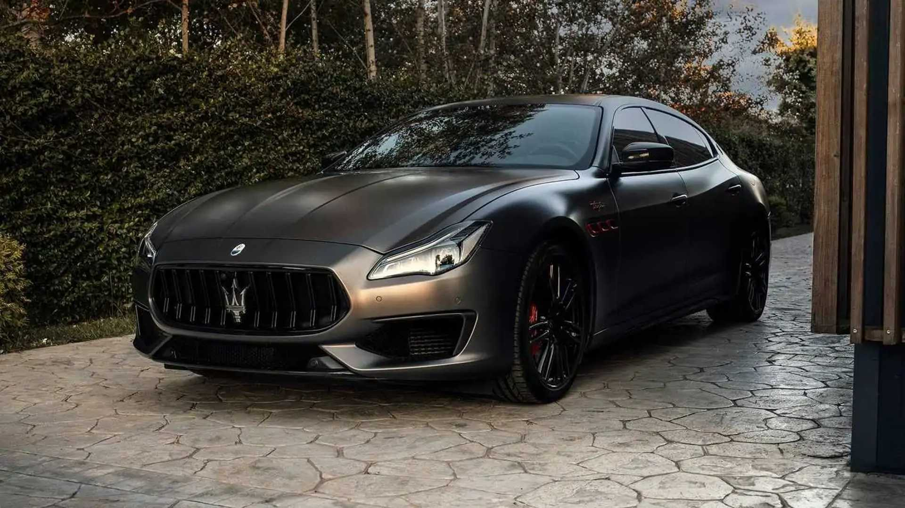

A Maserati Ghibli egy elegáns és erőteljes szedán, amely magas teljesítményű motorral rendelkezik és kifinomult belsővel büszkélkedhet.
Maserati Levante
A Maserati Levante egy luxus SUV, amely kombinálja az eleganciát és a vezetési élményt, ideális választás mindennapi használatra és hosszú távú utazásokra egyaránt.
Maserati Quattroporte
A Maserati Quattroporte a luxus szedánok királya, exkluzív megjelenéssel és magas teljesítménnyel, amely ötvözi a kényelmet és a sportos vezetési élményt.

2022 Maserati MC20
A 2022-es Maserati MC20 a márkának a versenyzés világába való visszatérését jelenti, egy teljesen új tervezésű, kifinomult sportautó, amelyben az innováció és a luxus találkozik. Ez az autó magas teljesítményű V6-os motorral rendelkezik, melynek ereje akár 630 lóerő is lehet, és kiváló aerodinamikai tervezésének köszönhetően kifinomult vezetési élményt nyújt.
Maserati GranTurismo
A Maserati GranTurismo egy ikonikus sportkocsi, amely lenyűgöző megjelenéssel és lendületes teljesítménnyel rendelkezik, valódi élményt nyújtva minden vezetési alkalommal.